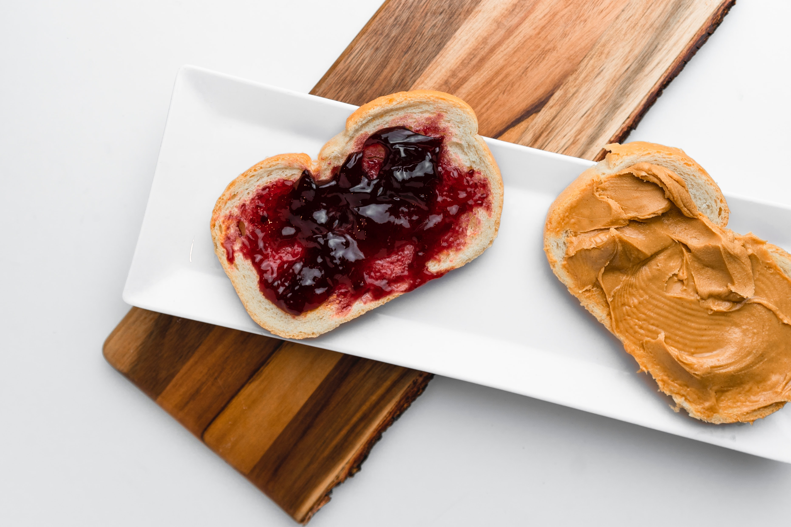

Peanut Butter and Jelly

Description
It's a classic for a reason, and one of the few foods which is distinctly American!
Some consider it boring, some think it's been done too many times, but when you're hungry and you don't have a nut allergy, this will always hit the spot.
Ingredients
- Peanut Butter
- Jelly
- 2 slices crusty sourdough bread
- Spinach (Optional)
Steps
- Spread peanut butter onto one piece of bread
- Spread jelly on the other piece of bread
- If you want some extra fiber add a handful of spinach to the peanut butter side
- Put the two pieces of bread together
- Enjoy!